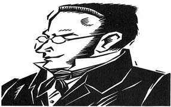
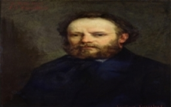
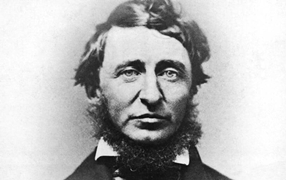

O único e sua Propriedade
O único e a sua propriedade é uma obra filosófica do escritor alemão Max Stirner. Este trabalho foi publicado pela primeira vez em 1845
Leia Já!

A propriedade é um Roubo
Pierre Joseph Proudhon (1809-1865) Começou a trabalhar cedo numa tipografia, onde acabou conhecendo Charles Fourier, que influenciou muito em suas idéias.
Leia Já

A desobediência Civil
A Desobediência Civil é um ensaio escrito por Henry David Thoreau em 1849. Thoreau escreveu o livro após ter sido preso por não pagar seus impostos.
Leia JáO manifesto do novo Libertário
Manifesto do Novo Libertário é uma obra de filosofia agorista. Nela é apresentado argumentos de como uma sociedade livre deveria funcionar.
Leia já